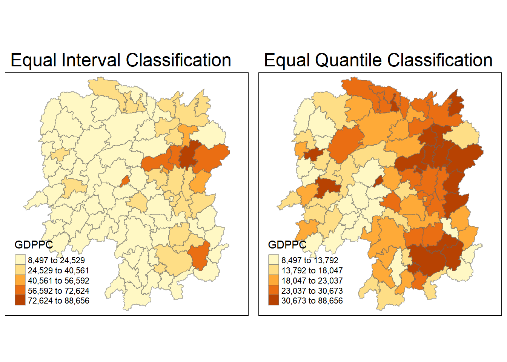

pacman::p_load(sf, spdep, tmap, tidyverse)Hands-On Exercise 7: Global & Local Measures of Spatial Autocorrelation
1 Getting Started
1.1 Analytical QUestion
In spatial policy, one of the main development objective of the local government and planners is to ensure equal distribution of development in the province. Our task in this study, hence, is to apply appropriate spatial statistical methods to discover if development are even distributed geographically. If the answer is No. Then, our next question will be “is there sign of spatial clustering?”. And, if the answer for this question is yes, then our next question will be “where are these clusters?”
In this case study, we are interested to examine the spatial pattern of a selected development indicator (i.e. GDP per capita) of Hunan Provice, People Republic of China.
1.2 Study Area and Data
- Hunan province administrative boundary layer at county level. This is a geospatial data set in ESRI shapefile format.
- Hunan_2012.csv: This csv file contains selected Hunan’s local development indicators in 2012.
1.3 Loading and Installing R packages
2 Getting Data in R Environment
2.1 Importing shapefile into R
hunan <- st_read(dsn= "data/geospatial",
layer = "Hunan")Reading layer `Hunan' from data source
`C:\gailteh\IS415-GAA\Hands-on_Ex\Hands-on_Ex07\data\geospatial'
using driver `ESRI Shapefile'
Simple feature collection with 88 features and 7 fields
Geometry type: POLYGON
Dimension: XY
Bounding box: xmin: 108.7831 ymin: 24.6342 xmax: 114.2544 ymax: 30.12812
Geodetic CRS: WGS 842.2 Importing csv fule into R
hunan2012 <- read_csv("data/aspatial/Hunan_2012.csv")2.3 Performing Relational Join
hunan <- left_join(hunan, hunan2012) %>%
select(1:4, 7, 15)2.4 Viewing Regional Development Indicator
Creating a map to show the distribution of GDPPC 2012
equal <- tm_shape(hunan) +
tm_fill("GDPPC",
n = 5,
style = "equal") +
tm_borders(alpha = 0.5) +
tm_layout(main.title = "Equal Interval Classification")
quantile <- tm_shape(hunan) +
tm_fill("GDPPC",
n = 5,
style = "quantile") +
tm_borders(alpha = 0.5) +
tm_layout(main.title = "Equal Quantile Classification")
tmap_arrange(equal,
quantile,
asp=1,
ncol=2)
3 Global Spatial Autocorrelation
In this section, we will compute global spatial autocorrelation statistics and perform spatial complete randomness test for global spatial autocorrelation.
3.1 Computing Contiguity Spatial Weights
Before computing global spatial autocorrelations statistics, we need to construct a spatial weights of the study area. The spatial weights is used to define the neighbourhood relationships between geographical units in the study area.
We will use poly2nb() to compute contiguity weight matrices for the study area. It builds a neighbours list based on regions with contiguous boundaries.
If you look at the documentation you will see that you can pass a “queen” argument that takes TRUE or FALSE as options. If you do not specify this argument the default is set to TRUE, that is, if you don’t specify queen = FALSE this function will return a list of first order neighbours using the Queen criteria.
wm_q <- poly2nb(hunan,
queen = TRUE)
summary(wm_q)Neighbour list object:
Number of regions: 88
Number of nonzero links: 448
Percentage nonzero weights: 5.785124
Average number of links: 5.090909
Link number distribution:
1 2 3 4 5 6 7 8 9 11
2 2 12 16 24 14 11 4 2 1
2 least connected regions:
30 65 with 1 link
1 most connected region:
85 with 11 linksThe summary report above shows that there are 88 area units in Hunan. The most connected area unit has 11 neighbours. There are two area units with only one neighbours
3.2 Row Standardised weights matrix
Next, we need to assign weights to each neighboring polygon. In our case, each neighboring polygon will be assigned equal weight (style=“W”). This is accomplished by assigning the fraction 1/(#ofneighbors) to each neighboring county then summing the weighted income values.
While this is the most intuitive way to summarise the neighbors’ values, it has one drawback in that polygons along the edges of the study area will base their lagged values on fewer polygons, thus potentially over- or under-estimating the true nature of the spatial autocorrelation in the data.
For this example, we’ll stick with the style=“W” option for simplicity’s sake but note that other more robust options are available, notably style=“B”.
rswm_q <- nb2listw(wm_q,
style="W",
zero.policy = TRUE)
rswm_qCharacteristics of weights list object:
Neighbour list object:
Number of regions: 88
Number of nonzero links: 448
Percentage nonzero weights: 5.785124
Average number of links: 5.090909
Weights style: W
Weights constants summary:
n nn S0 S1 S2
W 88 7744 88 37.86334 365.9147The input of nb2listw() must be object of class nb. The syntax of the function takes in 2 arguments, style and zero.poly.
style can take values “W”, “B”, “C”, “U”, “minmax”, and “S”.
B is basic binary coding
W is row standardised (sums over all links to n)
C is globally standardised (sums over all links to n)
U is equal to C divided by the number of neighbours (sums over all links to unity)
S is the variance stabilising coding scheme (sums over all links to n)
If zero policy is set to TRUE, weights vectors of zero length are inserted for regions without neighbours in the neighbours list. These will in turn generate lag values of zero, equivalent to the sum of products of the zero row t(rep(0, length=length(neighbours))) %*% x, for arbitrary numerical vector x of length length(neighbours). The spatially lagged value of x for the zero-neighbour region will then be zero, which may (or may not) be a sensible choice.
#Global Spatial Autocorrelation: Moran’s I Test
In this section, we will perform Moran’s I statistics testing using moran.test() from spdep.
moran.test(hunan$GDPPC,
listw = rswm_q,
zero.policy = TRUE,
na.action = na.omit)
Moran I test under randomisation
data: hunan$GDPPC
weights: rswm_q
Moran I statistic standard deviate = 4.7351, p-value = 1.095e-06
alternative hypothesis: greater
sample estimates:
Moran I statistic Expectation Variance
0.300749970 -0.011494253 0.004348351 What statistical conclusions can be drawn from the output?